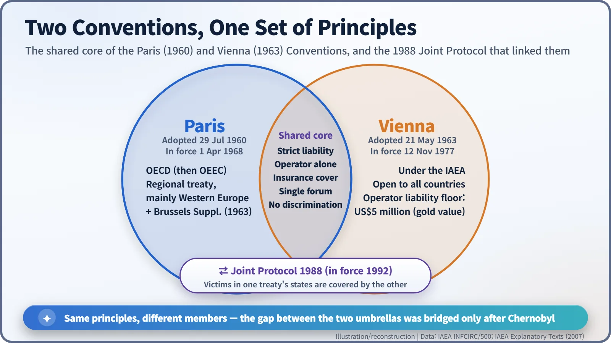
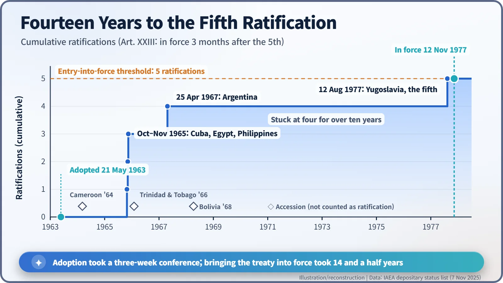

Nuclear History · 229
Thirty-Five Dollars an Ounce — The 1963 Vienna Convention on Civil Liability for Nuclear Damage
A treaty that pegged its minimum to gold at 35 dollars an ounce gave the world a second liability umbrella beside Paris, and waited fourteen years for its fifth ratification.
On 21 May 1963 a diplomatic conference under the International Atomic Energy Agency adopted the Vienna Convention on Civil Liability for Nuclear Damage. It made nuclear operators strictly and exclusively liable, set a minimum of US$5 million pegged to gold, and opened the system to every country. It then waited fourteen years for its fifth ratification, and only after Chernobyl was it linked to its European twin, the Paris Convention.
A treaty that quotes the price of gold
"The United States dollar referred to in this Convention is a unit of account equivalent to the value of the United States dollar in terms of gold on 29 April 1963, that is to say US $35 per one troy ounce of fine gold."
That sentence is Article V, paragraph 3, of a treaty about nuclear accidents. One moment the text is talking about operators and victims, the next it is quoting the price of gold. The treaty is the Vienna Convention on Civil Liability for Nuclear Damage, adopted in Vienna on 21 May 1963. The odd gold clause tells you what kind of promise it was: it set a floor under compensation, not a ceiling. [1]
An umbrella that only covered Europe
Three years earlier, on 29 July 1960, Western European countries had signed the Paris Convention. It said that if a nuclear accident happened, the company running the plant (the "operator") would pay even if it was not at fault, and victims would only have to deal with that one company. But Paris was a regional treaty, built for the members of the Organisation for European Economic Co-operation, today's OECD.
Nuclear technology, meanwhile, was spreading well beyond Europe. According to the IAEA's own explanatory texts, suppliers of reactors and fuel were reluctant to sell abroad when they might face liability that was "not clearly defined, variable and possibly unlimited". The IAEA, which had opened its doors in 1957, set out to build a worldwide version of the umbrella, one that any country could join whatever its political system. The preamble says exactly that: the treaty should help friendly relations among nations "irrespective of their differing constitutional and social systems". [1] [3]
Three weeks in Vienna, five principles
The diplomatic conference met in Vienna from 29 April to 19 May 1963. The convention was adopted on 21 May and opened for signature the same day. The date in the gold clause, 29 April, is simply the opening day of the conference.
The skeleton matches the Paris Convention:
- Strict liability. The operator's liability is "absolute": nobody has to prove it was careless. The exceptions are accidents directly caused by armed conflict, hostilities, civil war or insurrection, and (unless national law says otherwise) a grave natural disaster of an exceptional character.
- Channelling. Liability is channelled to the operator alone. Victims cannot sue the firm that sold a pump or built the plant, so they never have to work out whom to take to court.
- Financial security. The operator must carry insurance or another financial guarantee set by its government.
- A single forum. Claims are heard only in the courts of the country where the accident happened.
- No discrimination. Victims are treated alike regardless of nationality, domicile or residence.
Claims generally have to be brought within ten years of the accident. [1]

A floor, not a ceiling
What about money? Article V says a government may cap the operator's liability, but not at "less than US $5 million for any one nuclear incident". The convention itself sets no ceiling; whether to have a cap, and where, is left to each country. So there is no common limit shared by all members, a frequent misunderstanding.
Tying the floor to gold was meant to stop it sinking if the dollar lost value, and the IAEA's commentary notes that the minimum is "significantly higher than might appear at first sight". Then, in 1971, the United States stopped exchanging dollars for gold, and converting a "gold dollar" became murky. When the treaty was revised in 1997, the unit was switched to the International Monetary Fund's Special Drawing Rights (SDRs). [1] [3] [4]
Fourteen years waiting for the fifth ratification
The convention would enter into force three months after the fifth instrument of ratification was deposited. Cuba, Egypt and the Philippines ratified in quick succession in October and November 1965, and Argentina became the fourth in April 1967. Then nothing happened for a decade. Countries that had not attended the conference, such as Cameroon, Trinidad and Tobago and Bolivia, joined by "accession", but those instruments did not count towards the five ratifications.
Politics played a part too. According to legal historians, the Soviet Union took part in the conference but opposed the idea of channelling liability to operators rather than to states, and most of the Eastern bloc stayed outside until the early 1990s. Yugoslavia was the exception. It deposited the fifth ratification on 12 August 1977, and the convention finally entered into force on 12 November 1977, fourteen and a half years after adoption. [2] [5]

The accident outside the umbrella
The real test came on 26 April 1986 at Chernobyl. Radioactive contamination crossed borders, but the country where the accident happened, the Soviet Union, was not party to any nuclear liability convention. The IAEA's explanatory texts record that the Soviet Union regretted the consequences of the accident but "denied that it had any international legal obligations in that respect". However good an umbrella is, it does not help a country standing outside it.
The first repair was to close the gap between the two umbrellas. On 21 September 1988 a diplomatic conference convened jointly by the IAEA and the OECD in Vienna adopted the Joint Protocol, which entered into force on 27 April 1992. Among countries that have also joined the Joint Protocol, an operator liable under one convention is also liable for damage suffered in states belonging to the other. A 1997 amending protocol then raised the minimum to 300 million SDRs, and Ukraine (which acceded in 1996) and Russia (which ratified in 2005) came into the Vienna system. [2] [3]
The Vienna Convention today
According to the IAEA's depositary status list (last updated in November 2025), the convention has 48 parties. The United Kingdom and Spain signed but never ratified; both stayed with the Paris Convention instead. The United States joined neither Paris nor Vienna, relying on its domestic Price-Anderson Act and the Convention on Supplementary Compensation for Nuclear Damage (CSC). South Korea is not a party either. [2] [4]
What the Vienna Convention changed was less "how much" than "who pays, and where". Two treaties carried the same principles for different members, and it took a major accident before the gap between them was bridged. The floor once written as 35 dollars an ounce has been raised, step by step, ever since.